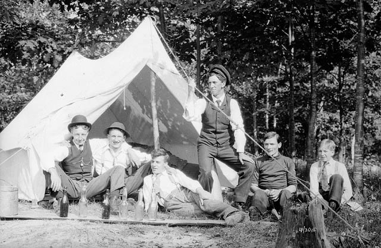

Hiel Park is a privately owned campground that opened up in 1907. One of the very first visitors to camp here with his friends is William Sims. Unfortunately, the names of the other men were forgotten and the records were lost when the administration building was tore down to make room for a more modern one. Mr. William Sims is the man partially standing in the center according to my grandfather.
- Primitive campground – Tent
- A campground without any amenities like bathrooms, electric, and water.
- Old West campground – Tent
- A campground with Porta Potty and water.
- The Daniel Boone campground – Tent
- A campground with amenity (bathrooms, showers, electricity and water)
- Open picnic tables
- These tables have no overhead shading.
- Sheltered picnic tables
- These tables have an overhead roof limited protection from the elements.
- Group sheltered areas
- These long tables have an overhead and partial siding to limit exposure form the elements.
- Trailer Campsites
- Up to 40 foot with sewer, electricity and water hookups available.
- RV Campsites
- With sewer, electricity and water hookups. Separate trailer parking space. Large enough to park RV and separate motor vehicle.
- Equine Campsites
- Power and water hookups no pens only for one-day horse rides.
- Equine Campsite with stall
- Power and water hookups used for longer stays over a day. Pens must be cleaned before check out inspection.
- Pioneer Cottages
- Cottages have power, water and full bath sleeps two.
- Master Cottages
- Cottages have power, water and full bath sleeps six.
- Fishing area only
- Signs will be clearly posted indicating fishing areas along Colonel Sanders Creek.
- Swimming area only
- Signs will be clearly posted indicating swimming areas along Colonel Sanders Creek.
- Hiking trail
- Each hiking trail will be clearly marked and a few will cross over each other.